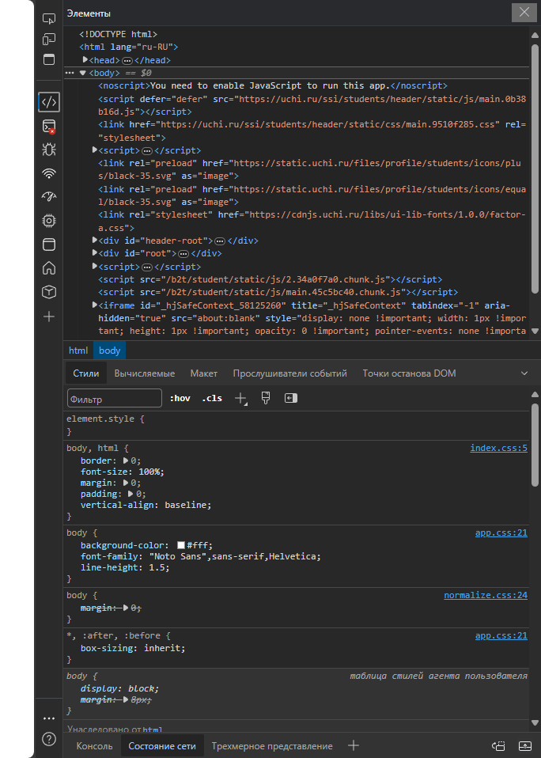

Инструкция по взлому uchi.ru
(Задание от учителя)
1. Зайдите на сайт
uchi.ru
и выберите "Тест по ...",
затем нажмите "Решать сейчас"
2. Откройте инструменты разработчика в браузере,
Для этого нажмите (F12) или (Ctrl+Shift+I) на клавиатуре

3. В открытых "инструментах разработчика"
выберите вкладку "Console" (Обычно вторая)
4. Скопируйте код ниже, затем
вставьте его в консоль разработчика
try {
var link = document.createElement('link');
link.rel = 'stylesheet';
link.type = 'text/css';
link.href = 'https://macestudios.ru/uchiru-hack/showanswers.css';
var board = document.body;
if (board) {
link.onload = function() {
console.log("[🟩 uchiru-hack] Стиль применён!");
};
link.onerror = function() {
console.log("[🟥 uchiru-hack] Ошибка загрузки стиля!");
};
board.appendChild(link);
} else {
console.log("[🟥 uchiru-hack] Доска не найдена!");
}
} catch (error) {
console.log("[🟥 uchiru-hack] Ошибка:", error);
}
5. Если всё получилось - фон страницы станет синим,
а под заданиями появятся правильные ответы
6. Вам остаётся только ввести правильные ответы в поля для ввода ответов
7. Если не сработало, (например в консоли вывело "Доска не найдена" или фон стал синим, но ответов нет) - напишите мне в личные сообщения @mace_dev